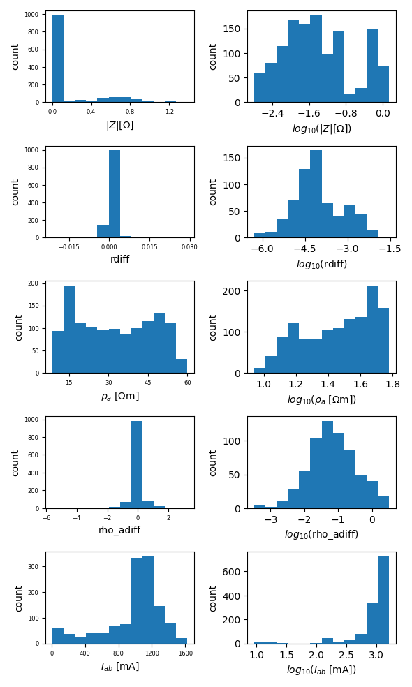
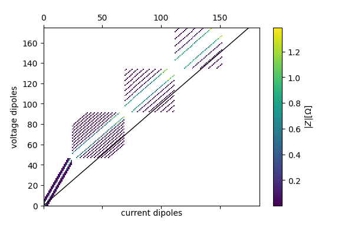
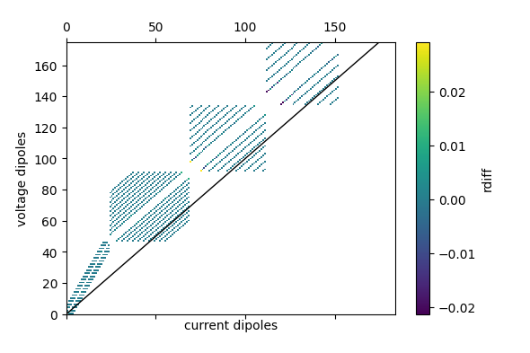
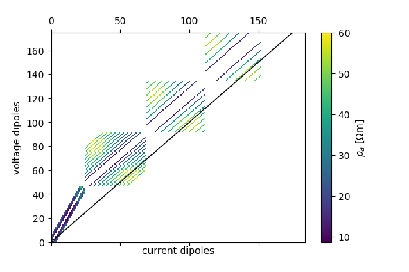
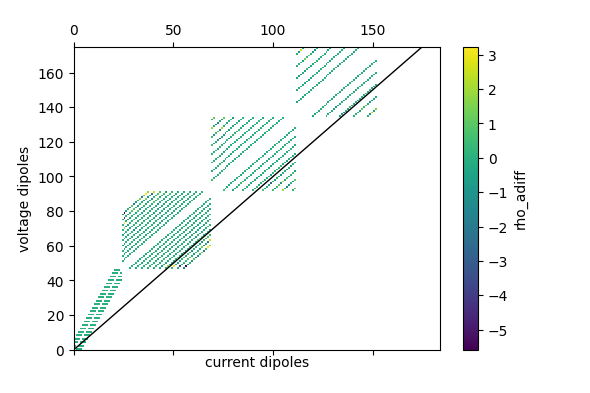
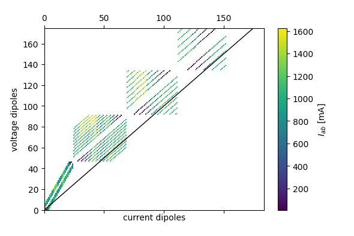

Note
Click here to download the full example code
Example for processing field data from Sycal
Note
This example is work in progress!!!
import matplotlib.pyplot as plt
import crtomo
import reda.exporters.crtomo as crto
import reda.utils.norrec as NR
import reda
Daten einlesen und berechnen
# reda container erstellen
ert = reda.ERT()
# normal und reciproke Daten einlesen
ert.import_syscal_bin('data_nor.bin')
ert.import_syscal_bin('data_rec.bin', reciprocals=48)
# K-Faktor berechnen
K = reda.utils.geometric_factors.compute_K_analytical(ert.data, spacing=2.5)
# Rho_a berechnen
reda.utils.geometric_factors.apply_K(ert.data, K)
# negative Widerstände bei negativen K umdrehen
reda.utils.fix_sign_with_K.fix_sign_with_K(ert.data)
# calculate diffeence between nor and rec measurement
ert.data = NR.assign_norrec_diffs(ert.data, ('r', 'rho_a'))
Histogramme plotten
fig = ert.histogram(('r', 'rdiff', 'rho_a', 'rho_adiff', 'Iab'))
plt.savefig('histogramms.png')

Out:
Generating histogram plot for key: r
Generating histogram plot for key: rdiff
Generating histogram plot for key: rho_a
Generating histogram plot for key: rho_adiff
Generating histogram plot for key: Iab
Pseudosektionen plotten
fig = ert.pseudosection('r')
plt.savefig('pseudo_r.png')
fig = ert.pseudosection('rdiff')
plt.savefig('pseudo_rdiff.png')
fig = ert.pseudosection('rho_a')
plt.savefig('pseudo_rhoa.png')
fig = ert.pseudosection('rho_adiff')
plt.savefig('pseudo_rhoadiff.png')
fig = ert.pseudosection('Iab')
plt.savefig('pseudo_I.png')





apply data filters
ert.filter('norrec == "rec"')
ert.filter('r < 0 or r > 1')
ert.filter('rho_a < 0 or rho_a > 60')
ert.filter('rdiff > 0.2 or rdiff < -0.2')
Datenfile in CRTomo Format ausgeben (volt.dat)
crto.write_files_to_directory(ert.data, '.')
Arbeiten im Tomodir
Gitter und Daten einlesen
td_obj = crtomo.tdMan(
elem_file='elem.dat',
elec_file='elec.dat')
td_obj.read_voltages('volt.dat')
Out:
This grid was sorted using CutMcK. The nodes were resorted!
Rectangular grid found
This grid was sorted using CutMcK. The nodes were resorted!
Rectangular grid found
Inversionseinstellungen
td_obj.crtomo_cfg['robust_inv'] = 'F'
td_obj.crtomo_cfg['dc_inv'] = 'F'
td_obj.crtomo_cfg['cells_z'] = '-1'
td_obj.crtomo_cfg['mag_rel'] = '10'
td_obj.crtomo_cfg['mag_abs'] = '0.5'
td_obj.crtomo_cfg['fpi_inv'] = 'F'
# td_obj.crtomo_cfg['pha_a1'] = '10'
# td_obj.crtomo_cfg['pha_b'] = '-1.5'
# td_obj.crtomo_cfg['pha_rel'] = '10'
# td_obj.crtomo_cfg['pha_abs'] = '0'
invert
Out:
Attempting inversion in directory: /tmp/tmprlvlo32e
Using binary: /home/mweigand/bin/CRTomo
Calling CRTomo
Inversion finished
Attempting to import the results
is robust False
Info: res_m.diag not found: /tmp/tmprlvlo32e/inv/res_m.diag
/home/mweigand/Programme/crtomo_tools/examples/06_field_data_processing
Info: ata.diag not found: /tmp/tmprlvlo32e/inv/ata.diag
/home/mweigand/Programme/crtomo_tools/examples/06_field_data_processing
Statistics of last iteration:
iteration 1
main_iteration 1
it_type DC/IP
type main
dataRMS 0.1107
magRMS 0.1107
phaRMS NaN
lambda 42800.0
roughness 0.0
cgsteps 392.0
nrdata 624.0
steplength 0.001
stepsize 0.007688
l1ratio NaN
Name: 9, dtype: object
save tomodir
td_obj.save_to_tomodir('td')
Total running time of the script: ( 3 minutes 47.160 seconds)